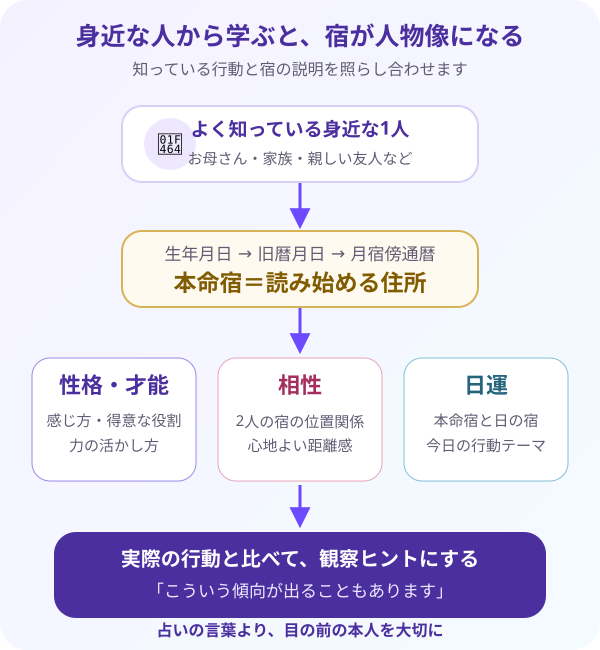

お母さんや身近な人を見てみよう！
自分の宿を読めたら、次はお母さん・家族・友人など、よく知っている1人を見ます。知っている人なら、説明と実際の姿を比べやすくなります。
自分の次は、よく知っている身近な1人を見てみましょう。宿の説明は決めつけではなく、その人を理解するための観察ヒントです。
1. 身近な人を「最初の観察対象」にする理由
自分の本命宿を確認したら、次はお母さん、家族、友人、パートナーなど、あなたが普段からよく知っている人を1人選びます。いきなり大勢を見ようとせず、まず1人に絞ることが上達の近道です。
身近な人なら、話し方、怒ったときの反応、得意な役割、疲れたときの様子など、実際の行動を思い出せます。そのため、宿の説明を読んだときに、「確かに人前ではこういう動きをする」「でも家では少し違う」と、文章と現実を具体的に比べられます。
反対に、会ったことのない有名人は、画面や記事で見える一部分しか分かりません。宿の説明と本当の人柄を比べにくいため、初心者の最初の練習相手には向きにくいのです。
よく知る人を観察すると、占いの言葉が単なる暗記ではなく、実際の人物像と結びついた知識になります。「この宿だからこうだ」と決めるのではなく、「この説明は、あの場面に表れているかもしれない」と考える練習をしましょう。
最初の1人は、長く一緒に過ごしていて、普段の様子を具体的に思い出せる人がおすすめです。お母さん、家族、親しい友人などから選びましょう。好き嫌いだけで評価せず、「どんな行動をする人か」を観察できる相手が向いています。
2. 本命宿が教えてくれる3つのこと
本命宿（ほんめいしゅく）は、新暦の誕生日を旧暦（きゅうれき）へ直し、その旧暦月日を月宿傍通暦（げっしゅくぼうつうれき）へ当てはめて導きます。たとえるなら、その人を読み始めるための「魂の最初の住所」のようなものです。
住所が分かると、その場所を出発点に周辺との関係を調べられるように、本命宿が分かると、次の3つを順番に読めるようになります。
① 性格・才能
その宿が持つ性質から、物事の感じ方、行動の癖、得意な役割、力を発揮しやすい場面を読みます。ただし「一生変わらない性格」ではなく、その人が持ちやすい傾向として捉えます。
② 相性
自分と相手の本命宿を27宿の円に並べ、2つの宿がどの位置関係にあるかを見ます。相性は「付き合うべき・別れるべき」という判定ではありません。話が通じやすい点、違いが出やすい点、心地よい距離感を知るために使います。
③ 日運（にちうん）
自分の本命宿と、見たい日の宿との位置関係から、その日の行動テーマを読みます。「良い日・悪い日」と決めるのではなく、今日は育てる日、見直す日、慎重に進む日というように、過ごし方のヒントへ変えます。
例えば張宿（ちょうしゅく）のキーワードは、「華やかさ・社交・見せ方」です。人の目を引く表現や、その場を明るく見せることに力を発揮しやすい宿として読みます。
身近な張宿の人を観察するなら、「人が集まったときに場を盛り上げているか」「服装や話し方に見せ方の工夫があるか」「誰かを紹介したり、人同士をつないだりするのが得意か」と、実際の行動を探します。
一方で、いつも華やかとは限りません。環境や気分によっては、人からどう見えるかを気にしすぎたり、期待に応えようとして疲れたりすることもあります。強みと注意点の両方を見ると、人物像が自然で立体的になります。
3. 決めつけない鑑定の基本姿勢
宿を読むときに最も大切なのは、「当たっている・外れている」だけで採点しないことです。占いの説明は、相手を一言で分類する答えではありません。相手を今までより丁寧に見るための観察ヒントです。
① レッテルではなく「観察ヒント」にする
「この宿だから、あなたは絶対にこういう人です」と決めつけると、目の前の本人より、占いの文章を優先してしまいます。「この性質は、どんな場面に表れていますか？」と、本人の経験を確かめながら読みましょう。
② 環境・経験・年齢による変化を考える
同じ宿でも、育った環境、仕事、家族関係、これまでの経験によって、性質の表れ方は変わります。若いころは短所として出ていた性質が、経験を重ねて強みとして使えるようになることもあります。
③ 可能性として、やさしく伝える
初心者が鑑定を伝えるときは、「こういう傾向が出ることもあります」「このような場面で力を発揮しやすいようです」という言い方がおすすめです。相手が「自分は少し違う」と感じる余地も残せます。
①生年月日から本命宿を確認する → ②宿のキーワードを読む → ③思い当たる実際の行動を探す → ④可能性としてやさしく言葉にする、の順で進めましょう。性格の評価ではなく、相手への理解を一段深めることが目的です。

相手の生年月日を入れれば、STEP1と同じ方式で自動算出します。登録した自分の情報は消えないので、安心して試してくださいね。
🌙 身近な人の本命宿を確認する
お母さん・家族・友人など1人の生年月日を入力すると、旧暦月日と本命宿を同じ月宿傍通暦式で自動算出します。STEP1の自分の情報は消えません。
宿の特徴と実際の人柄を比べるときは、「そういう面もあるかも」と柔らかく見るのがコツです。では5問で、読み方の姿勢も確認しましょう。